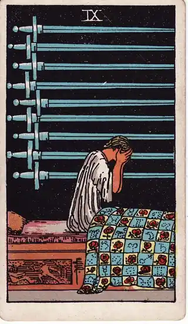
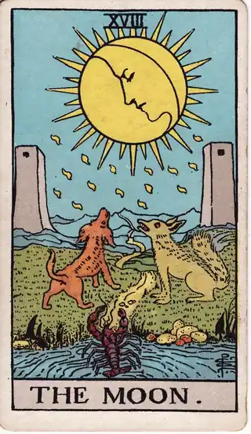
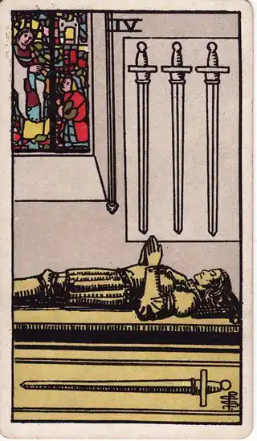

READING
考えすぎて眠れない夜に、ぐるぐる思考を止める考え方
・ DECIDE. 編集部
布団に入って、目を閉じたはずなのに。昼間に言われた一言、まだ起きてもいない来週のトラブルのこと、返信していないメッセージ。考えが同じところをぐるぐる回り続けて、気づけば時計の針は深夜を指しています。「考えすぎて眠れない夜」は、意志の弱さではありません。
先に言っておくと、今夜のゴールは、その問題を解決することではありません。ゴールは、「今夜はここまで」と区切りをつけて、明日の自分に渡すことです。解決は、頭が働く時間帯の仕事です。
POINT 01 なぜ夜にぐるぐるしてしまうのか
夜の脳は、昼間に比べて論理的なブレーキが利きにくくなり、感情や不安のほうを拡大してしまう性質があります。昼間なら「まあ何とかなる」と流せることが、夜には大きく、重く感じられる。だから、布団の中でいくら真面目に悩んでも、良い解決策が出ることはほとんどありません。出てくるのは、不安の拡大再生産だけです。
もう一つの理由は、脳が「未完了の件」を保持し続けることです。決まっていないこと、返していない連絡、明日の予定。脳はそれらを忘れないように監視を続けます。ぐるぐる思考の正体は、たいてい「決めていないことの山」です。問題そのものより、「まだ終わっていない」という状態が、頭を回し続けます。
つまり、夜のぐるぐるは「考えが足りない」のではなく、「区切りがない」状態です。必要なのは、より深く考えることではなく、脳に「この件は預かった」と伝える仕組みのほうです。決めていないことが山になる仕組みそのものは、優柔不断で決められない理由と抜け出し方でも整理しています。
POINT 02 カードの視点で見る

ソードの9は、夜にベッドで目覚め、顔を覆う人物の姿です。タロットの中で「眠れない夜」をそのまま描いたようなカードで、不安が頭の中で増幅している状態を表します。ただし、描かれているのは破滅ではなく「眠れないほどの心配」そのものです。心配の対象が実態より大きく見えている、夜特有の状態だと教えてくれます。

月は、月明かりの下の不安定な景色で、「見えないものへの不安」「想像の膨らみ」を表します。夜に考える最悪のシナリオは、暗さの中で形を変えた想像であることが多い。朝の光で見直すと、輪郭がはっきりして小さくなる。月は「今夜の判断は信用しすぎるな」という合図でもあります。

ソードの4は、剣を置いて横たわる騎士の姿です。「今は戦わない」という積極的な休息の選択を表します。考えることを放棄するのではなく、戦う時間と休む時間を分ける。今夜の自分に必要なのは、もう一押しの思考ではなく、この剣を置く判断です。
POINT 03 「外に出して、仮の結論で保存する」という技術
ぐるぐる思考を止める方法は、意外なほど具体的です。頭の中にあるモヤモヤを一度外に出し、仮の結論をつけて保存しておくこと。脳に「この件については、もう考えるのをやめた」と納得させる作業です。
やり方は三つだけです。一つ、頭を回っている件を、短い言葉で書き出す。文章にしなくて構いません。二つ、それぞれに「明日の朝、もう一度考える」といった仮の扱いを決める。解決ではなく、保留の確定です。三つ、その記録を残して、画面やノートを閉じる。「記録したから、もう忘れても大丈夫だ」と脳が認識すると、監視が緩み、張り詰めていた神経がふっと緩みます。
この三つは、カードを1枚引く流れと相性がいいものです。今頭を占領しているテーマについて1枚引き、出たカードの視点を「仮の結論」の材料にする。「今夜のところはこの視点で置いておく」と決めて、一言だけログに残す。決断ログとして残しておけば、翌朝の自分がそのまま続きを引き受けてくれます。
さらに、眠れない夜のログが積み重なると、自分のパターンが見えてきます。「決断の多い日の夜に回りやすい」「日曜の夜は明日の仕事のことばかり」。パターンが見えると、夜のぐるぐるは「得体の知れない不安」から「扱える対象」に変わります。眠れない夜全体の考え方は、考えすぎて眠れない夜のページにもまとめています。考えが回る背景に一日の決断の多さがあると感じる人は、決断疲れの記事もあわせてどうぞ。
POINT 04 自分への問いかけ
最後に、布団の中で自分に問いかけてみてください。今ぐるぐるしているのは、いくつの件か。どれも「まだ決めていないこと」ではないか。今夜の自分に、その結論を出す力は残っているか。仮の結論を一言で置くなら、何と書くか。そして、明日の朝の自分に渡すとしたら、何時から考え直すことにするか。
今夜出すべき答えは、問題の解決策ではありません。「今夜はここまで」という区切りそのものです。預けた荷物は、明日の自分がちゃんと受け取ります。画面を閉じて、目を閉じてください。